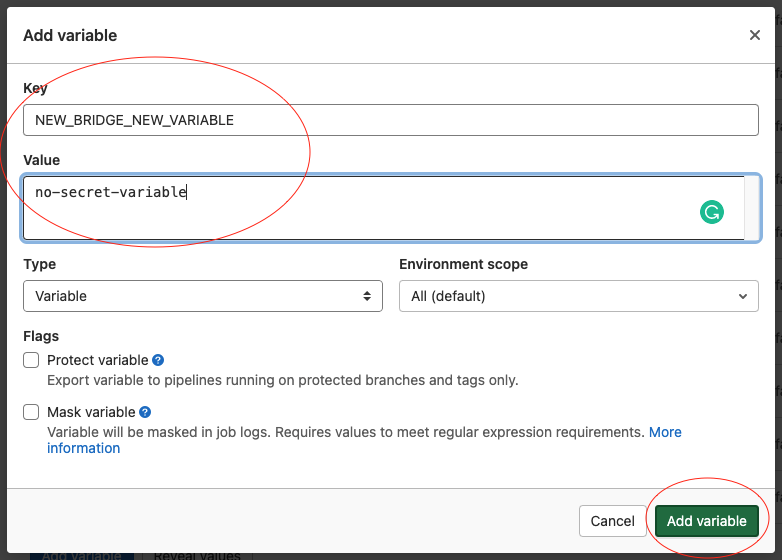

CREATE NEW MICROSERVICE
This process describes step by step how to create a new microservice, from the ECR repository to the helm chart templates that define the microservice. All of this is created from the Gitlab repository in the pipeline; no need for more tools or actions by the developer.
Introduction
The process requires that the steps be carried out in order. Basically, it is necessary to create the ECR repository first so that we can then start developing and testing our new microservice in ephemeral environments or in production.
1. Create ECR repository
We can't create the ECR repository in the branch where we are developing because the creation or update of the ECR repositories is only in the Master branch. This means that the first thing that we need to do is make a little merge to master to create our new microservice repo, by that way we can deploy our microservice later in dev branches.
- create a new branch from master
- create a new terraform ECR repo file in the folder:
infra-as-code/ecr-repositoriesyou can copy any of the other repos to have an example.- this is an example:
bash resource "aws_ecr_repository" "new-bridge-repository" { name = "new-bridge" tags = { Project = var.common_info.project Provisioning = var.common_info.provisioning Module = "new-bridge" } }
- this is an example:
- merge the new repository to Master branch. The pipeline will run and create the new ECR repo
new-bridge
2. Create our new microservice folder
We can start working on our new microservice based on an existing one. It depends if is a capability(bridges) or a use case. Select one or other depends on what are you developing. For example let's copy a capability "bruing-bridge" and paste in the root of the repo to change his name to "new-bridge". from this moment you can start to develop and do your tests locally. Every microservice must have the following directory structure:
new-bridge
├── .gitlab-ci.yml
├── Dockerfile
├── README.md
├── package.json
├── requirements.txt
├── setup.py
└── src
├── app.py
├── application
│ └── ...
├── config
│ └── ...
└── tests
└── ...
3. Update CI-CD gitlab files with the proper values
It's important to have the .gitlab-ci.yaml files correctly defined to enable pipelines:
* new-bridge/.gitlab-ci.yml
Change any reference to de template microservice to the new one.. example find and replace "bruin-bridge" for "new-bridge"
* .gitlab-ci.yml (the file in the root of the repository)
Here we need to specify to gitlab-ci that we define other jobs in a different directories (the .gitlab-ci.yml of our new repo). So locate the root gitlab file and add a new line with the path of the new micro jobs (do it respecting the alphabetical order)
...
- local: 'services/links-metrics-api/.gitlab-ci.yml'
- local: 'services/links-metrics-collector/.gitlab-ci.yml'
- local: 'services/lumin-billing-report/.gitlab-ci.yml'
- local: 'services/new-bridge/.gitlab-ci.yml' <─────────────── here!
- local: 'services/notifier/.gitlab-ci.yml'
- local: 'services/service-affecting-monitor/.gitlab-ci.yml'
- local: 'services/service-outage-monitor/.gitlab-ci.yml'
...
Now in the same file, let's define the "desired_tast" variable for this new micro (do it respecting the alphabetical order):
...
NATS_SERVER_DESIRED_TASKS: "1"
NATS_SERVER_1_DESIRED_TASKS: "1"
NATS_SERVER_2_DESIRED_TASKS: "1"
NEW_BRIDGE_DESIRED_TASKS: "1" <─────────────── here!
NOTIFIER_DESIRED_TASKS: "1"
SERVICE_AFFECTING_MONITOR_DESIRED_TASKS: "1"
SERVICE_OUTAGE_MONITOR_1_DESIRED_TASKS: "1"
...
3. Configure semantic-release
We need to edit two files, one in the new micro path and other in the root of the repo:
* new-bridge/package.json
update the name of the micro with our new working name (do it respecting the alphabetical order):
{
"name": "new-bridge", <─────────────── here!
"version": "0.0.1",
"dependencies": {},
"devDependencies": {}
}
* package.json (the file in the root of the repository)
add to the semantic-release global config our new path to analize version changes (do it respecting the alphabetical order):
...
"./services/links-metrics-api",
"./services/links-metrics-collector",
"./services/lumin-billing-report",
"./services/new-bridge", <─────────────── here!
"./services/notifier",
"./services/service-affecting-monitor",
"./services/service-outage-monitor",
...
3. Configure logs
We use 2 systems to storage logs, papertrail for 3 days and cloudwath for 1 month. Let's add those config in:
* ci-utils/papertrail-provisioning/config.py
just copy one block form other microservice and paste with the name of our new micro (do it respecting the alphabetical order):
...
{
"query": f"lumin-billing-report AND {ENVIRONMENT_NAME} AND <BUILD_NUMBER>",
"search_name": f"[lumin-billing-report] - logs",
"repository": "lumin-billing-report",
},
{ ¯│
"query": f"new-bridge AND {ENVIRONMENT_NAME} AND <BUILD_NUMBER>", │
"search_name": f"[new-bridge] - logs", ├──────────────> here!
"repository": "new-bridge", │
}, _│
{
"query": f"notifier AND {ENVIRONMENT_NAME} AND <BUILD_NUMBER>",
"search_name": f"[notifier] - logs",
"repository": "notifier",
},
...
helm/charts/fluent-bit-custom/templates/configmap.yamlThe same; copy one block form other microservice and paste with the name of our new micro (do it respecting the alphabetical order):... [OUTPUT] Name cloudwatch Match kube.var.log.containers.lumin-billing-report* region {{ .Values.config.region }} log_group_name {{ .Values.config.logGroupName }} log_stream_name lumin-billing-report auto_create_group true [OUTPUT] ¯│ Name cloudwatch │ Match kube.var.log.containers.new-bridge* │ region {{ .Values.config.region }} ├──────────────> here! log_group_name {{ .Values.config.logGroupName }} │ log_stream_name new-bridge │ auto_create_group true _│ [OUTPUT] Name cloudwatch Match kube.var.log.containers.notifier* region {{ .Values.config.region }} log_group_name {{ .Values.config.logGroupName }} log_stream_name notifier auto_create_group true ...
3. Update docker-compose to enable local deployments
docker-compose.ymlhere we define our container along with the rest of the microservices. Just add the definition of our container respecting the alphabetical order: ```` ... new-bridge: ¯│ build: │ # Context must be the root of the monorepo │ context: . │ dockerfile: new-bridge/Dockerfile │ args: │ REPOSITORY_URL: 374050862540.dkr.ecr.us-east-1.amazonaws.com ├──────────────> here! DOCKER_BASE_IMAGE_VERSION: 2.2.0 │ env_file: │- new-bridge/src/config/env │ depends_on: │
- "nats-server" │
- redis │ ports: │
- 5006:5000 _│
notifier: build: ... ````
4. Add option to enable or disable our microservice
helm/charts/automation-engine/Chart.yamlin this file we define our Automation-engine chart version and his dependencies. Let's add a condition for our microservice to have the possibility of disable or enable in our future deployments. ```` ...- name: lumin-billing-report version: '..*' condition: lumin-billing-report.enabled
- name: new-bridge ¯│ version: '..*' ├──────────────> here! condition: new-bridge.enabled _│
- name: notifier version: '..*' condition: notifier.enabled ... ````
5. Helm templates and variables
Here we will define the infraestructure part of our microservice with a helm chart. Is very important to know that this "how to" is only to copy an existing microservice, therefore, we take the following statements for granted: 1. The microservice will not have a public endpoint (except email-tagger-monitor) 2. The microservice port will always be 5000 3. Depends on the base chart you use to copy & paste, you will have more or less kubernetes resources. although most microservices have: configmap, deployment, secret and service.
Perfect, now let's copy and paste another chart to use as template, if we will develop a use-case, we must copy the most similar use-case. For this example we are creating a "new-bridge", so let's copy a "bruin-bridge" as a template:
* BASE-FOLDER: copy this folder helm/charts/automation-engine/charts/bruin-bridge and paste here helm/charts/automation-engine/charts/ we will have something like bruin-bridge copychange the name to new-bridge.
-
PREPARE BASE_FOLDER: now let's do a find and replace in our new folder
new-bridge. findbruin-bridgeand replace fornew-bridge. many substitutions should appear (at the moment of write this, i can see 46 sustitutions in 10 files but over time, this can change). Just remember to do this in thenew-bridgefolder context to evoid modify other resources. -
DEPENDENCIES and CHECKS: Now we have to customize our new microservice, first we must ask ourselves, what dependency does my new microservice have on other services? for example, bruin-bridge have a dependency with Nats and Redis, so it have a few checks to see if those services are available and if they are, it can be deployed. We can find this checks in the
deployment.yamlfile. Specifically in this part:... initContainers: - name: wait-nats-server image: busybox:1.28 command: ['sh', '-c', 'until wget --spider -S http://automation-engine-nats:8222/varz; do echo waiting for nats-server; sleep 2; done'] - name: wait-redis image: busybox:1.28 command: ['sh', '-c', 'until printf "PING\r\n" | nc ${REDIS_HOSTNAME} 6379; do echo waiting for redis; sleep 2; done'] envFrom: - configMapRef: name: {{ include "new-bridge.configmapName" . }} ...We can add or remove all the initcontainers we want. Even, it is very possible that all the dependencies that we need already have the microservice that we use as a base or some other microservice already developed. So we can navigate through the folders of the rest of the microservices and copy any other dependency check and use it in ours. I will add a new dependency fornotifiercopied from other microservice, and my file will look like the following:... initContainers: - name: wait-nats-server image: busybox:1.28 command: ['sh', '-c', 'until wget --spider -S http://automation-engine-nats:8222/varz; do echo waiting for nats-server; sleep 2; done'] - name: wait-redis image: busybox:1.28 command: ['sh', '-c', 'until printf "PING\r\n" | nc ${REDIS_HOSTNAME} 6379; do echo waiting for redis; sleep 2; done'] envFrom: - configMapRef: name: {{ include "new-bridge.configmapName" . }} {{- if .Values.config.capabilities_enabled.notifier }} ¯│ - name: wait-notifier │ image: busybox:1.28 ├──────────────> here! command: ['sh', '-c', 'until wget --spider -S http://notifier:5000/_health; do echo waiting for notifier; sleep 2; done'] │ {{- end }} _│ ...Note that we have aifcondition. You will see this in some check, we use this because if we deploy only some microservices, we must contemplate this. If the notifier not exist, the check will not be created. Nats and Redis are always required, thats wy don't have the conditional. -
VARIABLES: time to update the variables that will use our microservice, this involves various files:
-
helm/charts/automation-engine/charts/new-bridge/templates/configmap.yamlthis file always will be part of the deployment, it contains the variables base and the variables with no sensitive information. let's add a new variable NEW_VAR:... CURRENT_ENVIRONMENT: {{ .Values.global.current_environment }} ENVIRONMENT_NAME: "{{ .Values.global.environment }}" NATS_SERVER1: {{ .Values.global.nats_server }} NEW_VAR: "{{ .Values.config.new_var }}" <─────────────── here! REDIS_HOSTNAME: {{ .Values.global.redis_hostname }} PAPERTRAIL_ACTIVE: "{{ .Values.global.papertrail_active }}" PAPERTRAIL_HOST: {{ .Values.global.papertrail_host }} PAPERTRAIL_PORT: "{{ .Values.global.papertrail_port }}" PAPERTRAIL_PREFIX: "{{ .Values.config.papertrail_prefix }}" ...You can see here two important things, 1. there are variables with quotes and without quotes: this depends on your needs, if you don't put quotes, YAML will interpret the best case for you.. example, if you put a number like 5 as a value, YAML will interpret this as an integer, but careful, this could be a danger if your application expects a string variable; if this is the case, use quotes to define your var. 2. Additionally, we have variables of two types: "global" and "config". The global ones are common for all microservices, and the "config" is specific for this microservice. All the additional variables that we add will be of the type "config" -
helm/charts/automation-engine/charts/new-bridge/templates/secret.yamlthis file may or may not exist in the chart and contains variables that have sensitive information. This info will be encoded with base64 to no show in clear text. let's add a new variable NEW_SENSITIVE_VAR:apiVersion: v1 kind: Secret metadata: name: {{ include "new-bridge.secretName" . }} labels: {{- include "new-bridge.labels" . | nindent 4 }} annotations: reloader.stakater.com/match: "true" data: NEW_SENSITIVE_VAR: {{ .Values.config.new_sensitive_var | b64enc }} <─────────────── here! -
helm/charts/automation-engine/charts/new-bridge/values.yamlNow that we add our new variable in the configmap.yaml, we have to define it in our values file in order to use it. As you can see above, the definition of our variable points to the values file of our microservice; "Values.config.new_var" so let's go update it:... config: <─────────────── in config section!!! papertrail_prefix: "" # -- New usefull variable with no sensitive iformation ¯│______________ here the configmap variable! new_var: "" _│ # -- New usefull variable with sensitive iformation ¯│______________ and here the secret variable! new_sensitive_var: "" _│ ...Check that we only define the variable but no put any value, although we can also set a default value if we want. -
helm/charts/automation-engine/values.yamlThis is the values template off the entire automation-engine application. This only have the structure of the values and no contain any real value. For this part we will copy the content of the values file that we just created and paste in the plase that correspond (respecting the alphabetical order). It's important to note that we are pasting the values inside another Yaml, so we must adapt the indentation for the destiny file: ```` ...
-- lumin-billing-report subchart specific configuration
lumin-billing-report: # -- Field to indicate if the lumin-billing-report module is going to be deployed enabled: true # -- Number of replicas of lumin-billing-report module replicaCount: 1 config: # -- Papertrail prefix for create logs definition papertrail_prefix: "" # -- URI of Lumin API lumin_uri: "" # -- Token credentials for Lumin API lumin_token: "" # -- Name of customer to generate lumin-billing-report customer_name: "" # -- Email address to send lumin-billing-report billing_recipient: "" image: repository: 374050862540.dkr.ecr.us-east-1.amazonaws.com/lumin-billing-report pullPolicy: Always # Overrides the image tag whose default is the chart appVersion. tag: "" service: type: ClusterIP port: 5000 resources: limits: cpu: 200m memory: 256Mi requests: cpu: 100m memory: 128Mi
-- new-bridge subchart specific configuration ¯│
new-bridge: │ replicaCount: 1 │ enabled: true │ config: │ papertrail_prefix: "" │ # -- New usefull variable with no sensitive iformation │ new_var: "" │ # -- New usefull variable with sensitive iformation │ new_sensitive_var: "" │ image: │ repository: 374050862540.dkr.ecr.us-east-1.amazonaws.com/new-bridge ├──────────────> here! pullPolicy: Always │ # Overrides the image tag whose default is the chart appVersion. │ tag: "" │ service: │ type: ClusterIP │ port: 5000 │ resources: │ limits: │ cpu: 200m │ memory: 256Mi │ requests: │ cpu: 100m │ memory: 128Mi _│
-- notifier subchart specific configuration
notifier: # -- Field to indicate if the notifier module is going to be deployed enabled: true # -- Number of replicas of notifier module replicaCount: 1 # -- notifier image details image: # -- notifier repository for docker images repository: 374050862540.dkr.ecr.us-east-1.amazonaws.com/notifier pullPolicy: Always # -- notifier tag of docker image tag: "" # -- notifier Service Configuration ... ```` Things to check: first the indentation!!.. second, the "global" config is not set here; it is define at the beginning of the values file and is common for all microservices. and finnaly, we remove blanck and default configurations to get a sorter file (things removed: autoscaling, the default is false so we can ommit. nodeSelector. tolerations and affinity). PD: You can mantein autoscaling if you will enable it.
helm/charts/automation-engine/values.yaml.tplThis is the most important file, it contains the values that will be parsed and used to deploy the Automation-Engine application. Bassicaly it's the same file of values.yaml, but with the variables that will be replaced in the pipeline to deploy a production or develop environment. Let's add our new micro with the variables: ```` ...
-- lumin-billing-report subchart specific configuration
lumin-billing-report: enabled: ${LUMIN_BILLING_REPORT_ENABLED} replicaCount: ${LUMIN_BILLING_REPORT_DESIRED_TASKS} config: # -- Papertrail prefix for create logs definition papertrail_prefix: "lumin-billing-report-${LUMIN_BILLING_REPORT_BUILD_NUMBER}" # -- URI of Lumin API lumin_uri: ${LUMIN_URI} # -- Token credentials for Lumin API lumin_token: ${LUMIN_TOKEN} # -- Name of customer to generate lumin-billing-report customer_name: ${CUSTOMER_NAME_BILLING_REPORT} # -- Email address to send lumin-billing-report billing_recipient: ${BILLING_RECIPIENT} image: repository: 374050862540.dkr.ecr.us-east-1.amazonaws.com/lumin-billing-report pullPolicy: Always # Overrides the image tag whose default is the chart appVersion. tag: ${LUMIN_BILLING_REPORT_BUILD_NUMBER} service: type: ClusterIP port: 5000 resources: limits: cpu: 200m memory: 256Mi requests: cpu: 100m memory: 128Mi
-- new-bridge subchart specific configuration ¯│
new-bridge: │ replicaCount: ${NEW_BRIDGE_DESIRED_TASKS} │ enabled: ${NEW_BRIDGE_ENABLED} │ config: │ papertrail_prefix: "new-bridge-${NEW_BRIDGE_BUILD_NUMBER}" │ # -- New usefull variable with no sensitive iformation │ new_var: ${NEW_BRIDGE_NEW_VAR} │ # -- New usefull variable with sensitive iformation │ new_sensitive_var: ${NEW_BRIDGE_NEW_SENSITIVE_VAR} │ image: │ repository: 374050862540.dkr.ecr.us-east-1.amazonaws.com/new-bridge ├──────────────> here! pullPolicy: Always │ # Overrides the image tag whose default is the chart appVersion. │ tag: ${NEW_BRIDGE_BUILD_NUMBER} │ service: │ type: ClusterIP │ port: 5000 │ resources: │ limits: │ cpu: 200m │ memory: 256Mi │ requests: │ cpu: 100m │ memory: 128Mi _│
-- notifier subchart specific configuration
notifier: enabled: ${NOTIFIER_ENABLED} replicaCount: ${NOTIFIER_DESIRED_TASKS} # -- notifier image details image: # -- notifier repository for docker images repository: 374050862540.dkr.ecr.us-east-1.amazonaws.com/notifier pullPolicy: Always # -- notifier tag of docker image tag: ${NOTIFIER_BUILD_NUMBER} # -- notifier Service Configuration service: type: ClusterIP port: 5000 ... ```` With this, we have the entire template of our new microservice. Now we need to set in the pipeline the variables that we just created.
ci-utils/environments/deploy_environment_vars.shIn this file, we define the variables that will be used in the values file. Most of the cases are variables that we create in GitLab with the value of dev and production environments. This file is a bash script that has multiple functions to define the variables, each function is for the microservice that requires those variables. If we are adding a new micro that requires variables, we need to define the function and in the bottom of the file execute that function. PD: no all microservices needs specific variables, so in some cases, we wouldn't need to touch this file or even create a secret.yaml. Rebember to respect the alphabetical order: ```` ... function lumin_billing_report_variables() { if [[ "${CI_COMMIT_REF_SLUG}" != "master" ]]; then # lumin-billing-report environment variables for ephemeral environments export BILLING_RECIPIENT=${BILLING_RECIPIENT_REPORT_DEV} else # lumin-billing-report environment variables for production environment export BILLING_RECIPIENT=${BILLING_RECIPIENT_REPORT_PROD} fi }
function new_bridge_variables() { ¯│ if [[ "${CI_COMMIT_REF_SLUG}" != "master" ]]; then │ # new-bridge environment variables for ephemeral environments │ export NEW_BRIDGE_NEW_VARIABLE=${NEW_BRIDGE_NEW_VARIABLE_DEV} │ export NEW_BRIDGE_NEW_SENSITIVE_VARIABLE=${NEW_BRIDGE_NEW_SENSITIVE_VARIABLE_DEV} ├──────────────> here! else │ # new-bridge environment variables for production environment │ export NEW_BRIDGE_NEW_VARIABLE=${NEW_BRIDGE_NEW_VARIABLE_PRO} │ export NEW_BRIDGE_NEW_SENSITIVE_VARIABLE=${NEW_BRIDGE_NEW_SENSITIVE_VARIABLE_PRO} │ fi │ } _│
function notifier_variables() { if [[ "${CI_COMMIT_REF_SLUG}" != "master" ]]; then # notifier environment variables for ephemeral environments export NOTIFIER_SLACK_URL=${SLACK_URL_DEV} else # notifier environment variables for production environment export NOTIFIER_SLACK_URL=${SLACK_URL_PRO} fi } _│ ... function environments_assign() { # assign enabled variable for each subchart create_enabled_var_for_each_subchart # assign common environment variables for each environment common_variables_by_environment # assign specific environment variables for each subchart bruin_bridge_variables cts_bridge_variables digi_bridge_variables digi_reboot_report_variables email_tagger_monitor_variables hawkeye_bridge_variables links_metrics_api_variables lit_bridge_variables lumin_billing_report_variables new_bridge_variables <─────────────── and here! notifier_variables t7_bridge_variables ticket_collector_variables velocloud_bridge_variables } ... ````
add the variables in gitlab-cifinaly, we have all the path until the real value in gitlab.. let's go to the repository settings/ci-cd section and create the new varaibles: 
-
That's all, with this and the proper commit message the pipeline will run and deploy an ephimeral environment.